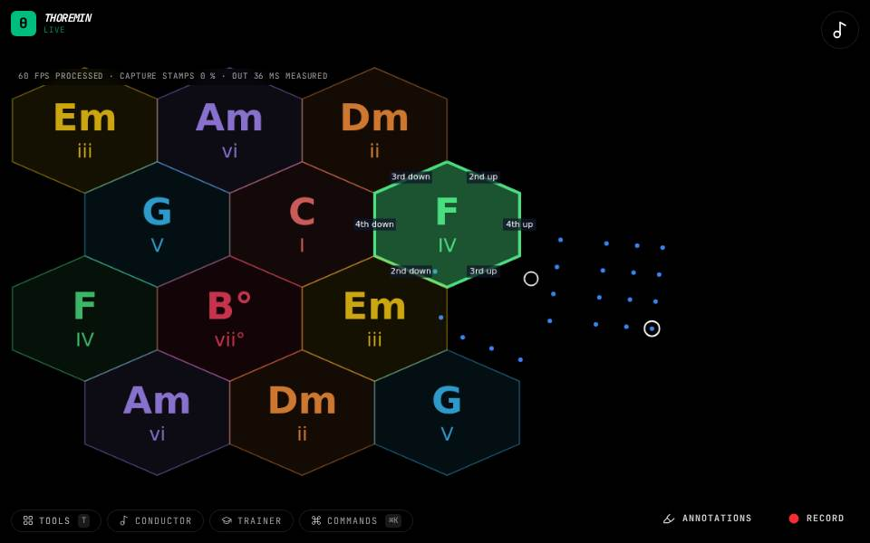

Instruments › Chords and harmony
Chord Map Strum

What to do
- Point at a chord with your left hand.
- Strum down or up with your right hand.
- The chord sounds as a guitar strum, timed to your stroke.
The chord map, strummed like the air guitar.
How it works
Your left hand chooses the chord on the map exactly as on the Chord Map. Your right hand strums: each stroke is predicted a moment before the camera shows it, so the strum lands when you meant it rather than a frame late. The chord is voiced as a guitarist would play it, low string first, with strings it does not use muted. A stroke the camera only caught late still sounds, at once and a little softer.
Settings
In Chord map, with play set to strum: which point of the strumming hand is followed (the wrist or a fingertip), how far apart the strings sound, how big and fast a stroke must be to count, how far ahead a strum is committed, and the strum's volume.
Its settings: Chord map. Every knob: the manual.